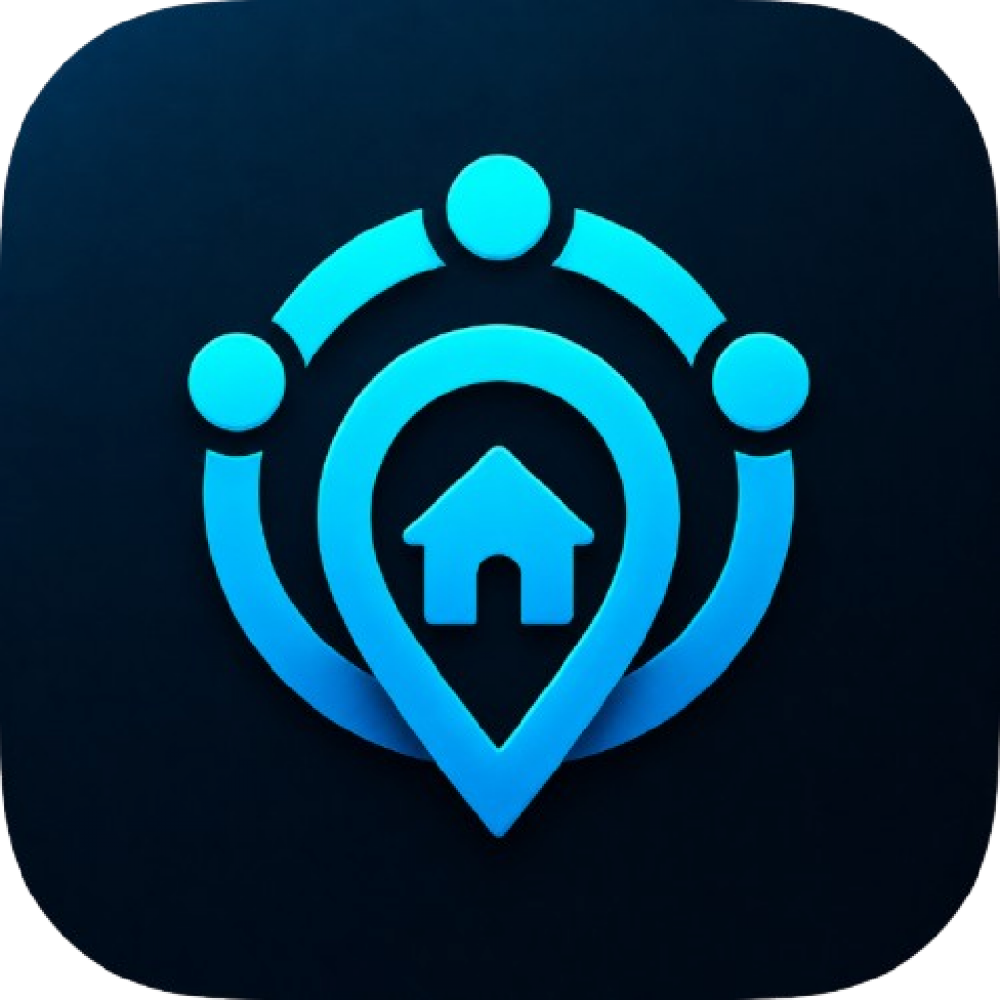

Közel
Our commitment to child safety and the prevention of child sexual abuse and exploitation.
Official legal resourcesChild Safety Standards
1. Zero tolerance for child sexual abuse and exploitation
Közel strictly prohibits any content, activity, or behavior involving the sexual abuse or exploitation of children.
Prohibited conduct includes:
- Creating, uploading, sharing, requesting, or distributing child sexual abuse material (CSAM).
- Sexual exploitation or abuse of minors.
- Grooming or attempting to establish contact with a child for sexual purposes.
- Sexualized content involving minors.
- Sexual extortion, trafficking, or the solicitation of minors for sexual purposes.
- Encouraging, facilitating, or promoting child abuse or exploitation.
These standards apply to user profiles, posts, comments, images, videos, messages, and other interactions on Közel.
2. Reporting child safety concerns
Users can report content or behavior that violates Közel's safety standards using the reporting features available within the app.
Child safety concerns can also be reported directly to our safety contact:
Report a child safety concern →
When contacting us, please describe the concern and provide relevant information. Do not send, download, or redistribute suspected illegal material.
3. Review and enforcement
We take reports of child safety violations seriously and assess reported content and behavior.
Depending on the circumstances and applicable policies, enforcement actions may include:
- Removing content that violates our safety standards.
- Restricting or suspending accounts.
- Permanently terminating accounts involved in serious or repeated violations.
- Taking appropriate action to prevent further abuse or exploitation.
- Preserving relevant information where legally required.
4. Cooperation with authorities
Közel will cooperate with relevant law enforcement authorities and appropriate child safety organizations in accordance with applicable laws and reporting obligations.
Where legally required, suspected child sexual abuse material and other reportable cases will be reported to the appropriate authorities.
5. Prevention and platform safety
We are committed to maintaining a safer community through our platform rules, user reporting processes, and appropriate moderation and enforcement measures.
Users are expected to respect these standards and immediately report suspected child exploitation or abuse.
6. Child safety contact
For child safety concerns, questions about this policy, or inquiries regarding our prevention and enforcement practices, contact our designated safety contact:
Email: kozelbudakeszi@gmail.com
7. Policy updates
We may update these Child Safety Standards when necessary to reflect changes in our platform, safety practices, or applicable legal requirements. The latest version will be published on this page.
Need help?
Contact kozelbudakeszi@gmail.com for child safety inquiries.